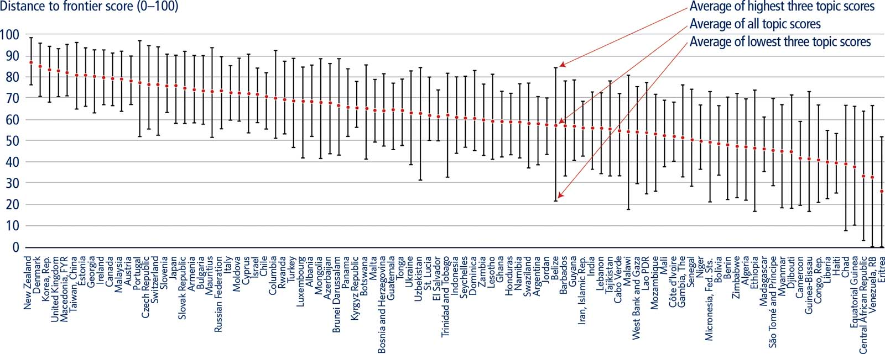
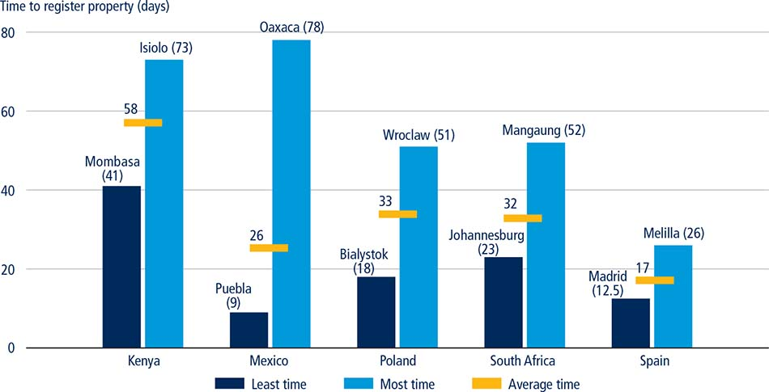
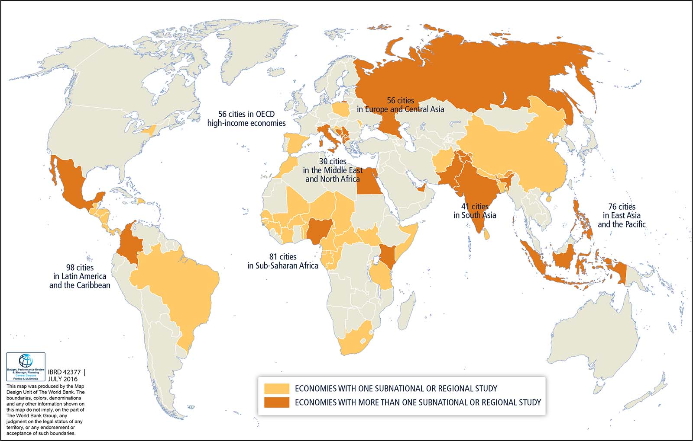
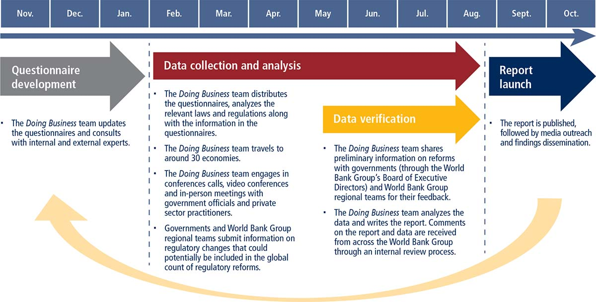

The foundation of Doing Business is the notion that economic activity, particularly private sector development, benefits from clear and coherent rules: Rules that set out and clarify property rights and facilitate the resolution of disputes. And rules that enhance the predictability of economic interactions and provide contractual partners with essential protections against arbitrariness and abuse. Such rules are much more effective in shaping the incentives of economic agents in ways that promote growth and development where they are reasonably efficient in design, are transparent and accessible to those for whom they are intended and can be implemented at a reasonable cost. The quality of the rules also has a crucial bearing on how societies distribute the benefits and finance the costs of development strategies and policies.
▪ Doing Business measures aspects of business regulation affecting domestic small and medium-size firms defined based on standardized case scenarios and located in the largest business city of each economy. In addition, for 11 economies a second city is covered.
▪ Doing Business covers 11 areas of business regulation across 190 economies. Ten of these areas—starting a business, dealing with construction permits, getting electricity, registering property, getting credit, protecting minority investors, paying taxes, trading across borders, enforcing contracts and resolving insolvency—are included in the distance to frontier score and ease of doing business ranking. Doing Business also measures features of labor market regulation, which is not included in these two measures.
▪ Doing Business relies on four main sources of information: the relevant laws and regulations, Doing Business respondents, the governments of the economies covered and the World Bank Group regional staff.
▪ More than 39,000 professionals in 190 economies have assisted in providing the data that inform the Doing Business indicators over the past 14 years.
▪ This year’s report expands the paying taxes indicator set to cover postfiling processes—what happens after a firm pays taxes—such as tax refunds, tax audits and administrative tax appeals.
▪ Doing Business includes a gender dimension in four of the 11 indicator sets. Starting a business, registering property and enforcing contracts present a gender dimension for the first time this year. Labor market regulation already captured gender disaggregated data in last year’s report.
Good rules are a key to social inclusion. Enabling growth—and ensuring that all people, regardless of income level, can participate in its benefits—requires an environment where new entrants with drive and good ideas can get started in business and where good firms can invest and expand. The role of government policy in the daily operations of domestic small and medium-size firms is a central focus of the Doing Business data. The objective is to encourage regulation that is designed to be efficient, accessible to all and simple to implement. Onerous regulation diverts the energies of entrepreneurs away from developing their businesses. But regulation that is efficient, transparent and implemented in a simple way facilitates business expansion and innovation, and makes it easier for aspiring entrepreneurs to compete on an equal footing.
Doing Business measures aspects of business regulation for domestic firms through an objective lens. The focus of the project is on small and medium-size companies in the largest business city of an economy. Based on standardized case studies, Doing Business presents quantitative indicators on the regulations that apply to firms at different stages of their life cycle. The results for each economy can be compared with those for 189 other economies and over time.
Doing Business captures several important dimensions of the regulatory environment as it applies to local firms. It provides quantitative indicators on regulation for starting a business, dealing with construction permits, getting electricity, registering property, getting credit, protecting minority investors, paying taxes, trading across borders, enforcing contracts and resolving insolvency (table 2.1). Doing Business also measures features of labor market regulation. Although Doing Business does not present rankings of economies on the labor market regulation indicators or include the topic in the aggregate distance to frontier score or ranking on the ease of doing business, it does present the data for these indicators.
TABLE 2.1 What Doing Business measures—11 areas of business regulation
Indicator set |
What is measured |
Starting a business |
Procedures, time, cost and paid-in minimum capital to start a limited liability company |
Dealing with construction permits |
Procedures, time and cost to complete all formalities to build a warehouse and the quality control and safety mechanisms in the construction permitting system |
Getting electricity |
Procedures, time and cost to get connected to the electrical grid, the reliability of the electricity supply and the transparency of tariffs |
Registering property |
Procedures, time and cost to transfer a property and the quality of the land administration system |
Getting credit |
Movable collateral laws and credit information systems |
Protecting minority investors |
Minority shareholders’ rights in related-party transactions and in corporate governance |
Paying taxes |
Payments, time and total tax rate for a firm to comply with all tax regulations as well as post-filing processes |
Trading across borders |
Time and cost to export the product of comparative advantage and import auto parts |
Enforcing contracts |
Time and cost to resolve a commercial dispute and the quality of judicial processes |
Resolving insolvency |
Time, cost, outcome and recovery rate for a commercial insolvency and the strength of the legal framework for insolvency |
Labor market regulation |
Flexibility in employment regulation and aspects of job quality |
The choice of the 11 sets of Doing Business indicators has been guided by economic research and firm-level data, specifically data from the World Bank Enterprise Surveys.1 These surveys provide data highlighting the main obstacles to business activity as reported by entrepreneurs in more than 130,000 firms in 139 economies. Access to finance and access to electricity, for example, are among the factors identified by the surveys as important to businesses—inspiring the design of the Doing Business indicators on getting credit and getting electricity.
The design of the Doing Business indicators has also been informed by theoretical insights gleaned from extensive research and the literature on the role of institutions in enabling economic development. In addition, the background papers developing the methodology for each of the Doing Business indicator sets have established the importance of the rules and regulations that Doing Business focuses on for such economic outcomes as trade volumes, foreign direct investment, market capitalization in stock exchanges and private credit as a percentage of GDP.2
Some Doing Business indicators give a higher score for more regulation and better-functioning institutions (such as courts or credit bureaus). Higher scores are given for stricter disclosure requirements for related-party transactions, for example, in the area of protecting minority investors. Higher scores are also given for a simplified way of applying regulation that keeps compliance costs for firms low—such as by easing the burden of business start-up formalities with a one-stop shop or through a single online portal. Finally, Doing Business scores reward economies that apply a risk-based approach to regulation as a way to address social and environmental concerns—such as by imposing a greater regulatory burden on activities that pose a high risk to the population and a lesser one on lower-risk activities. Thus the economies that rank highest on the ease of doing business are not those where there is no regulation—but those where governments have managed to create rules that facilitate interactions in the marketplace without needlessly hindering the development of the private sector.
To provide different perspectives on the data, Doing Business presents data both for individual indicators and for two aggregate measures: the distance to frontier score and the ease of doing business ranking. The distance to frontier score aids in assessing the absolute level of regulatory performance and how it improves over time. This measure shows the distance of each economy to the “frontier,” which represents the best performance observed on each of the indicators across all economies in the Doing Business sample since 2005 or the third year in which data were collected for the indicator. The frontier is set at the highest possible value for indicators calculated as scores, such as the strength of legal rights index or the quality of land administration index. This underscores the gap between a particular economy’s performance and the best performance at any point in time and to assess the absolute change in the economy’s regulatory environment over time as measured by Doing Business. The distance to frontier is first computed for each topic and then averaged across all topics to compute the aggregate distance to frontier score. The ranking on the ease of doing business complements the distance to frontier score by providing information about an economy’s performance in business regulation relative to the performance of other economies as measured by Doing Business.
Doing Business uses a simple averaging approach for weighting component indicators, calculating rankings and determining the distance to frontier score.3 Each topic covered by Doing Business relates to a different aspect of the business regulatory environment. The distance to frontier scores and rankings of each economy vary, often considerably, across topics, indicating that a strong performance by an economy in one area of regulation can coexist with weak performance in another (figure 2.1). One way to assess the variability of an economy’s regulatory performance is to look at its distance to frontier scores across topics (see the country tables). Morocco, for example, has an overall distance to frontier score of 67.50, meaning that it is two-thirds of the way from the worst to the best performance. Its distance to frontier score is 92.34 for starting a business, 83.51 for paying taxes and 81.12 for trading across borders. At the same time, it has a distance to frontier score of 33.89 for resolving insolvency, 45 for getting credit and 53.33 for protecting minority investors.
FIGURE 2.1 An economy’s regulatory environment may be more business-friendly in some areas than in others

Source: Doing Business database.
Note: The distance to frontier scores reflected are those for the 10 Doing Business topics included in this year’s aggregate distance to frontier score. The figure is illustrative only; it does not include all 190 economies covered by this year’s report. See the country tables for the distance to frontier scores for each Doing Business topic for all economies.
Many important policy areas are not covered by Doing Business; even within the areas it covers its scope is narrow (table 2.2). Doing Business does not measure the full range of factors, policies and institutions that affect the quality of an economy’s business environment or its national competitiveness. It does not, for example, capture aspects of macroeconomic stability, development of the financial system, market size, the incidence of bribery and corruption or the quality of the labor force.
TABLE 2.2 What Doing Business does not cover
Examples of areas not covered |
Macroeconomic stability |
Development of the financial system |
Quality of the labor force |
Incidence of bribery and corruption |
Market size |
Lack of security |
Examples of aspects not included within the areas covered |
In paying taxes, personal income tax rates |
In getting credit, the monetary policy stance and the associated ease or tightness of credit conditions for firms |
In trading across borders, export or import tariffs and subsidies |
In resolving insolvency, personal bankruptcy rules |
The focus is deliberately narrow even within the relatively small set of indicators included in Doing Business. The time and cost required for the logistical process of exporting and importing goods is captured in the trading across borders indicators, for example, but they do not measure the cost of tariffs or of international transport. Doing Business provides a narrow perspective on the infrastructure challenges that firms face, particularly in the developing world, through these indicators. It does not address the extent to which inadequate roads, rail, ports and communications may add to firms’ costs and undermine competitiveness (except to the extent that the trading across borders indicators indirectly measure the quality of ports and border connections). Similar to the indicators on trading across borders, all aspects of commercial legislation are not covered by those on starting a business or protecting minority investors. And while Doing Business measures only a few aspects within each area that it covers, business regulation reforms should not focus only on these aspects, because those that it does not measure are also important.
Doing Business does not attempt to quantify all costs and benefits of a particular law or regulation to society as a whole. The paying taxes indicators measure the total tax rate, which, in isolation, is a cost to businesses. However, the indicators do not measure—nor are they intended to measure—the benefits of the social and economic programs funded with tax revenues. Measuring the quality and efficiency of business regulation provides only one input into the debate on the regulatory burden associated with achieving regulatory objectives, which can differ across economies. Doing Business provides a starting point for this discussion and should be used in conjunction with other data sources.
The Doing Business methodology is designed to be an easily replicable way to benchmark specific aspects of business regulation. Its advantages and limitations should be understood when using the data (table 2.3).
TABLE 2.3 Advantages and limitations of the Doing Business methodology
Feature |
Advantages |
Limitations |
Use of standardized case scenarios |
Makes data comparable across economies and methodology transparent, using case scenarios that are common globally |
Reduces scope of data; only regulatory reforms in areas measured can be systematically tracked; the case scenarios may not be the most common in a particular economy |
Focus on largest business citya |
Makes data collection manageable (cost-effective) and data comparable |
Reduces representativeness of data for an economy if there are significant differences across locations |
Focus on domestic and formal sector |
Keeps attention on formal sector—where regulations are relevant and firms are most productive |
Unable to reflect reality for informal sector—important where that is large—or for foreign firms facing a different set of constraints |
Reliance on expert respondents |
Ensures that data reflect knowledge of those with most experience in conducting types of transactions measured |
Indicators less able to capture variation in experiences among entrepreneurs |
Focus on the law |
Makes indicators “actionable”—because the law is what policy makers can change |
Where systematic compliance with the law is lacking, regulatory changes will not achieve full results desired |
Source: Doing Business database.
a. In economies with a population of more than 100 million as of 2013, Doing Business covers business regulation in both the largest and second largest business city.
Ensuring comparability of the data across a global set of economies is a central consideration for the Doing Business indicators, which are developed around standardized case scenarios with specific assumptions. One such assumption is the location of a standardized business—the subject of the Doing Business case study—in the largest business city of the economy. The reality is that business regulations and their enforcement may differ within a country, particularly in federal states and large economies. But gathering data for every relevant jurisdiction in each of the 190 economies covered by Doing Business is infeasible. Nevertheless, where policy makers are interested in generating data at the local level, beyond the largest business city, Doing Business has complemented its global indicators with subnational studies (box 2.1). Coverage was extended to the second largest business city in economies with a population of more than 100 million (as of 2013) in Doing Business 2015.
BOX 2.1 Comparing regulation at the local level: subnational Doing Business studies
Subnational Doing Business studies, which are undertaken at the request of governments, expand the Doing Business analysis beyond an economy’s largest business city. They measure variation in regulations or in the implementation of national laws across locations within an economy (as in Poland) or a region (as in South East Europe).
Data collected by subnational studies over the past three years show that there can be substantial variation within an economy (see figure). In Mexico, for example, in 2016 registering a property transfer took as few as 9 days in Puebla and as many as 78 in Oaxaca. Indeed, within the same economy one can find locations that perform as well as economies ranking in the top 20 on the ease of registering property and locations that perform as poorly as economies ranking in the bottom 40 on that indicator.
Different locations, different regulatory processes, same economy

Source: Subnational Doing Business database.
Note: The average time shown for each economy is based on all locations covered by the data: 11 cities in Kenya in 2016, 32 states in Mexico in 2016, 18 cities in Poland in 2015, 9 cities in South Africa in 2015 and 19 cities in Spain in 2015.
While subnational Doing Business studies generate disaggregated data on business regulation, they go beyond a data collection exercise. They have been shown to be strong motivators for regulatory reform at the local level:
• Results can be benchmarked both locally and globally because the data produced are comparable across locations within the economy and internationally. Comparing locations within the same economy—which share the same legal and regulatory framework—can be revealing: local officials struggle to explain why doing business is more challenging in their jurisdiction than in a neighboring one.
• Highlighting good practices that exist in some locations but not others within an economy helps policy makers recognize the potential for replicating these good practices. This can yield discussions about regulatory reform across different levels of government, providing opportunities for local governments and agencies to learn from one another and resulting in local ownership and capacity building.
Since 2005 subnational reports have covered 438 locations in 65 economies (see map). Seventeen economies—including the Arab Republic of Egypt, Mexico, Nigeria, the Philippines, and the Russian Federation—have undertaken two or more rounds of subnational data collection to measure progress over time. This year subnational studies were completed in Kenya, Mexico and the United Arab Emirates. Ongoing studies include those in Afghanistan (5 cities), Colombia (32 cities), three EU member states (22 cities in Bulgaria, Hungary and Romania) and Kazakhstan (8 cities).
Subnational reports are available on the Doing Business website at http://www.doingbusiness.org/subnational.
Subnational studies cover a large number of cities across all regions of the world

Source: Subnational Doing Business database.
Doing Business recognizes the limitations of the standardized case scenarios and assumptions. But while such assumptions come at the expense of generality, they also help to ensure the comparability of data. Some Doing Business topics are complex, and so it is important that the standardized cases are defined carefully. For example, the standardized case scenario usually involves a limited liability company or its legal equivalent. There are two reasons for this assumption. First, private, limited liability companies are the most prevalent business form (for firms with more than one owner) in many economies around the world. Second, this choice reflects the focus of Doing Business on expanding opportunities for entrepreneurship: investors are encouraged to venture into business when potential losses are limited to their capital participation.
Another assumption underlying the Doing Business indicators is that entrepreneurs have knowledge of and comply with applicable regulations. In practice, entrepreneurs may not be aware of what needs to be done or how to comply with regulations and may lose considerable time trying to find out. Alternatively, they may intentionally avoid compliance—by not registering for social security, for example. Firms may opt for bribery and other informal arrangements intended to bypass the rules where regulation is particularly onerous—an aspect that helps explain differences between the de jure data provided by Doing Business and the de facto insights offered by the World Bank Enterprise Surveys.4 Levels of informality tend to be higher in economies with particularly burdensome regulation. Compared with their formal sector counterparts, firms in the informal sector typically grow more slowly, have poorer access to credit and employ fewer workers—and these workers remain outside the protections of labor law and, more generally, other legal protections embedded in the law.5 Firms in the informal sector are also less likely to pay taxes. Doing Business measures one set of factors that help explain the occurrence of informality and give policy makers insights into potential areas of regulatory reform.
The Doing Business data are based on a detailed reading of domestic laws and regulations as well as administrative requirements. The report covers 190 economies—including some of the smallest and poorest economies, for which little or no data are available from other sources. The data are collected through several rounds of communication with expert respondents (both private sector practitioners and government officials), through responses to questionnaires, conference calls, written correspondence and visits by the team. Doing Business relies on four main sources of information: the relevant laws and regulations, Doing Business respondents, the governments of the economies covered and the World Bank Group regional staff (figure 2.2). For a detailed explanation of the Doing Business methodology, see the data notes.
FIGURE 2.2 How Doing Business collects and verifies the data

The Doing Business indicators are based mostly on laws and regulations: around 60% of the data embedded in the Doing Business indicators are based on a reading of the law. In addition to filling out questionnaires, Doing Business respondents submit references to the relevant laws, regulations and fee schedules. The Doing Business team collects the texts of the relevant laws and regulations and checks the questionnaire responses for accuracy. The team will examine the civil procedure code, for example, to check the maximum number of adjournments in a commercial court dispute, and read the insolvency code to identify if the debtor can initiate liquidation or reorganization proceeding. These and other types of laws are available on the Doing Business law library website.6 Since the data collection process involves an annual update of an established database, having a very large sample of respondents is not strictly necessary. In principle, the role of the contributors is largely advisory—helping the Doing Business team to locate and understand the laws and regulations. There are quickly diminishing returns to an expanded pool of contributors. This notwithstanding, the number of contributors rose by 58% between 2010 and 2016.
Extensive consultations with multiple contributors are conducted by the team to minimize measurement error for the rest of the data. For some indicators—for example, those on dealing with construction permits, enforcing contracts and resolving insolvency—the time component and part of the cost component (where fee schedules are lacking) are based on actual practice rather than the law on the books. This introduces a degree of judgment by respondents on what actual practice looks like. When respondents disagree, the time indicators reported by Doing Business represent the median values of several responses given under the assumptions of the standardized case.
More than 39,000 professionals in 190 economies have assisted in providing the data that inform the Doing Business indicators over the past 14 years.7 This year’s report draws on the inputs of more than 12,500 professionals.8 Table 12.2 in the data notes lists the number of respondents for each indicator set. The Doing Business website shows the number of respondents for each economy and each indicator set.
Selected on the basis of their expertise in these areas, respondents are professionals who routinely administer or advise on the legal and regulatory requirements in the specific areas covered by Doing Business. Because of the focus on legal and regulatory arrangements, most of the respondents are legal professionals such as lawyers, judges or notaries. In addition, officials of the credit bureau or registry complete the credit information questionnaire. Accountants, architects, engineers, freight forwarders and other professionals answer the questionnaires related to paying taxes, dealing with construction permits, trading across borders and getting electricity. Information that is incorporated into the indicators is also provided by certain public officials (such as registrars from the company or property registry).
The Doing Business approach is to work with legal practitioners or other professionals who regularly undertake the transactions involved. Following the standard methodological approach for time-and-motion studies, Doing Business breaks down each process or transaction, such as starting a business or registering a building, into separate steps to ensure a better estimate of time. The time estimate for each step is given by practitioners with significant and routine experience in the transaction.
There are two main reasons that Doing Business does not survey firms. The first relates to the frequency with which firms engage in the transactions captured by the indicators, which is generally low. For example, a firm goes through the start-up process once in its existence, while an incorporation lawyer may carry out 10 such transactions each month. The incorporation lawyers and other experts providing information to Doing Business are therefore better able to assess the process of starting a business than are individual firms. They also have access to current regulations and practices, while a firm may have faced a different set of rules when incorporating years before. The second reason is that the Doing Business questionnaires mostly gather legal information, which firms are unlikely to be fully familiar with. For example, few firms will know about all the many legal procedures involved in resolving a commercial dispute through the courts, even if they have gone through the process themselves. But a litigation lawyer should have little difficulty in providing the requested information on all the processes.
After receiving the completed questionnaires from the Doing Business respondents, verifying the information against the law and conducting follow-up inquiries to ensure that all relevant information is captured, the Doing Business team shares the preliminary descriptions of regulatory reforms with governments (through the World Bank Group’s Board of Executive Directors) and with regional staff of the World Bank Group. Through this process government authorities and World Bank Group staff working on most of the economies covered can alert the team about, for example, regulatory reforms not included by the respondents or additional achievements of regulatory reforms already captured in the database. The Doing Business team can then turn to the local private sector experts for further consultation and, as needed, corroboration. In addition, the team responds formally to the comments of governments or regional staff and provides explana ions of the scoring decisions.
Information on data corrections is provided in the data notes and on the Doing Business website. A transparent complaint procedure allows anyone to challenge the data. From November 2015 to October 2016 the team received and responded to more than 240 queries on the data. If changes in data are confirmed, they are immediately reflected on the website.
Doing Business was designed with two main types of users in mind: policy makers and researchers.9 It is a tool that governments can use to design sound business regulatory policies. Nevertheless, the Doing Business data are limited in scope and should be complemented with other sources of information. Doing Business focuses on a few specific rules relevant to the specific case studies analyzed. These rules and case studies are chosen to be illustrative of the business regulatory environment, but they are not a comprehensive description of that environment. By providing a unique data set that enables analysis aimed at better understanding the role of business regulation in economic development, Doing Business is also an important source of information for researchers.
Doing Business offers policy makers a benchmarking tool useful in stimulating policy debate, both by exposing potential challenges and by identifying good practices and lessons learned. Despite the narrow focus of the indicators, the initial debate in an economy on the results they highlight typically turns into a deeper discussion on areas where business regulatory reform is needed, including areas well beyond those measured by Doing Business.
Many Doing Business indicators can be considered actionable. For example, governments can set the minimum capital requirement for new firms, invest in company and property registries to increase their efficiency, or improve the efficiency of tax administration by adopting the latest technology to facilitate the preparation, filing and payment of taxes by the business community. And they can undertake court reforms to shorten delays in the enforcement of contracts. But some Doing Business indicators capture procedures, time and costs that involve private sector participants, such as lawyers, notaries, architects, electricians or freight forwarders. Governments may have little influence in the short run over the fees these professions charge, though much can be achieved by strengthening professional licensing regimes and preventing anticompetitive behavior. And governments have no control over the geographic location of their economy, a factor that can adversely affect businesses.
While many Doing Business indicators are actionable, this does not necessarily mean that they are all “action-worthy” in a particular context. Business regulatory reforms are only one element of a strategy aimed at improving competitiveness and establishing a solid foundation for sustainable economic growth. There are many other important goals to pursue—such as effective management of public finances, adequate attention to education and training, adoption of the latest technologies to boost economic productivity and the quality of public services, and appropriate regard for air and water quality to safeguard public health. Governments must decide what set of priorities best suits their needs. To say that governments should work toward a sensible set of rules for private sector activity (as embodied, for example, in the Doing Business indicators) does not suggest that doing so should come at the expense of other worthy policy goals.
Over the past decade governments have increasingly turned to Doing Business as a repository of actionable, objective data providing unique insights into good practices worldwide as they have come to understand the importance of business regulation as a driving force of competitiveness. To ensure the coordination of efforts across agencies, economies such as Colombia, Malaysia and Russia have formed regulatory reform committees. These committees use the Doing Business indicators as one input to inform their programs for improving the business environment. More than 40 other economies have also formed such committees. In East Asia and the Pacific they include: Brunei Darussalam; Indonesia; the Republic of Korea; the Philippines; Taiwan, China; and Thailand. In the Middle East and North Africa: the Arab Republic of Egypt, Kuwait, Morocco, Saudi Arabia and the United Arab Emirates. In South Asia: India and Pakistan. In Europe and Central Asia: Albania, Croatia, Georgia, Kazakhstan, Kosovo, the Kyrgyz Republic, the former Yugoslav Republic of Macedonia, Moldova, Montenegro, Poland, Tajikistan, Ukraine and Uzbekistan. In Sub-Saharan Africa: the Democratic Republic of Congo, the Republic of Congo, Côte d’Ivoire, Burundi, Guinea, Kenya, Liberia, Malawi, Mali, Mauritius, Nigeria, Rwanda, Sierra Leone, Togo, Zambia and Zimbabwe. And in Latin America: Chile, Costa Rica, the Dominican Republic, Guatemala, Mexico, Panama and Peru. Governments have reported more than 2,900 regulatory reforms, 777 of which have been informed by Doing Business since 2003.10
Many economies share knowledge on the regulatory reform process related to the areas measured by Doing Business. Among the most common venues for this knowledge sharing are peer-to-peer learning events—workshops where officials from different governments across a region or even across the globe meet to discuss the challenges of regulatory reform and to share their experiences.
Doing Business data are widely used by think tanks and other research organizations, both for the development of new indexes and to produce research papers.
Many research papers have shown the importance of business regulation and how it relates to different economic outcomes.11 One of the most cited theoretical mechanisms on how excessive business regulation affects economic performance and development is that it makes it too costly for firms to engage in the formal economy, causing them not to invest or to move to the informal economy. Recent studies have conducted extensive empirical testing of this proposition using Doing Business and other related indicators. According to one study, for example, a reform that simplified business registration in Mexican municipalities increased registration by 5% and wage employment by 2.2%—and, as a result of increased competition, reduced the income of incumbent businesses by 3%.12 Business registration reforms in Mexico also resulted in 14.9% of informal business owners shifting to the formal economy.13
Considerable effort has been devoted to studying the link between government regulation of firm entry and employment growth. In Portugal business reforms resulted in a reduction of the time and cost needed for company formalization, increasing the number of business start-ups by 17% and creating 7 new jobs per 100,000 inhabitants per month. But although these start-ups were smaller and more likely to be female-owned than before the reform, they were also headed by less experienced and poorly-educated entrepreneurs with lower sales per worker.14
In many economies companies engaged in international trade struggle with high trade costs arising from transport, logistics and regulations, impeding their competitiveness and preventing them from taking full advantage of their productive capacity. With the availability of Doing Business indicators on trading across borders—which measure the time, procedural and monetary costs of exporting and importing—several empirical studies have assessed how trade costs affect the export and import performance of economies. A rich body of empirical research shows that efficient infrastructure and a healthy business environment are positively linked to export performance.15
Improving infrastructure efficiency and trade logistics bring documented benefits to an economy’s balance of trade and individual traders but delays in transit time can reduce exports: a study analyzing the importance of trade logistics found that a 1-day increase in transit time reduces exports by an average of 7% in Sub-Saharan Africa.16 Another study found that a 1-day delay in transport time for landlocked economies and for time-sensitive agricultural and manufacturing products has a particularly large negative impact, reducing trade by more than 1% for each day of delay.17 Delays while clearing customs procedures also negatively impact a firm’s ability to export, particularly when goods are destined for new clients.18 And in economies with flexible entry regulations, a 1% increase in trade is associated with an increase of more than 0.5% in income per capita, but has no positive income effects in economies with more rigid regulation.19 Research has also found that—although domestic buyers benefit from having goods of varying quality and price to choose from—import competition only results in minimal quality upgrading in OECD high-income economies with cumbersome regulation while it has no effect on quality upgrading in non-OECD economies with cumbersome regulation.20 Therefore, the potential gains for consumers from import competition are reduced where regulations are cumbersome.
Doing Business measures aspects of business regulation affecting domestic firms. However, research shows that better business regulation—as measured by Doing Business—is associated with higher levels of foreign direct investment.21 Furthermore, foreign direct investment can either impede or promote domestic investment depending on how business friendly entry regulations are in the host economy. In fact, foreign direct investment has been shown to crowd out domestic investment in economies with costly processes for starting a business.22 Another study showed that economies with higher international market integration have, on average, easier and simpler processes for starting a business.23
Recent empirical work shows the importance of well-designed credit market regulations and well-functioning court systems for debt recovery. For example, a reform making bankruptcy laws more efficient significantly improved the recovery rate of viable firms in Colombia.24 In a multi-economy study, the introduction of collateral registries for movable assets was shown to increase firms’ access to finance by approximately 8%.25 In India the establishment of debt recovery tribunals reduced non-performing loans by 28% and lowered interest rates on larger loans, suggesting that faster processing of debt recovery cases cut the cost of credit.26 An in-depth review of global bank flows revealed that firms in economies with better credit information sharing systems and higher branch penetration evade taxes to a lesser degree.27 Strong shareholder rights have been found to lower financial frictions, especially for firms with large external finance relative to their capital stock (such as small firms or firms in distress).28
There is also a large body of theoretical and empirical work investigating the distortionary effects of high tax rates and cumbersome tax codes and procedures. According to one study, business licensing among retail firms rose 13% after a tax reform in Brazil.29 Another showed that a 10% reduction in tax complexity is comparable to a 1% reduction in effective corporate tax rates.30
Labor market regulation—as measured by Doing Business—has been shown to have important implications for the labor market. According to one study, graduating from school during a time of adverse economic conditions has a persistent, harmful effect on workers’ subsequent employment opportunities. The persistence of this negative effect is stronger in countries with stricter employment protection legislation.31 Rigid employment protection legislation can also have negative distributional consequences. A study on Chile, for example, found that the tightening of job security rules was associated with lower employment rates for youth, unskilled workers and women.32
Doing Business identified 17 different data projects or indexes that use Doing Business as one of its sources of data.33 Most of these projects or institutions use indicator level data and not the aggregate ease of doing business ranking. Starting a business is the indicator set most widely used, followed by labor market regulation and paying taxes. These indexes typically combine Doing Business data with data from other sources to assess an economy along a particular aggregate dimension such as competitiveness or innovation. The Heritage Foundation’s Index of Economic Freedom, for example, has used six Doing Business indicators to measure the degree of economic freedom in the world.34 Economies that score better in these six areas also tend to have a high degree of economic freedom.
Similarly, the World Economic Forum uses Doing Business data in its Global Competitiveness Index to demonstrate how competitiveness is a global driver of economic growth. The organization also uses Doing Business indicators in four other indexes that measure technological readiness, human capital development, travel and tourism sector competitiveness and trade facilitation. These publicly accessible sources expand the general business environment data generated by Doing Business by incorporating it into the study of other important social and economic issues across economies and regions. They prove that, taken individually, Doing Business indicators remain a useful starting point for a rich body of analysis across different areas and dimensions in the research world.
Doing Business has contributed substantially to the debate on the importance of business regulation for economic development. By expanding the time series and the scope of the data with the recent methodology expansion, Doing Business hopes to continue being a key reference going forward.
This year’s Doing Business report includes data for one new economy, Somalia, expands the paying taxes indicators, includes gender dimensions in four indicator sets and adds a new annex on selling to the government.
For any new indicators or economies added to the distance to frontier score and the ease of doing business ranking, the data are presented for the last two consecutive years to ensure that there are at least two years of comparable data.
The paying taxes indicator set is the last to be expanded as part of the methodology improvement process started three years ago that affects 9 of the 10 areas covered in the ease of doing business ranking. Only the starting a business indicators remain under the original methodology.
The paying taxes indicator set assesses the number of payments, time and total tax rate for a firm to comply with all tax regulations. This year’s report adds a new indicator to include postfiling processes. Under postfiling processes, Doing Business measures value added tax refund, corporate income tax audits and administrative tax appeals. Under value added tax refunds, Doing Business measures how long it takes to comply and to obtain back the value added tax paid on a capital purchase (including any value added tax audits associated with it). Under the corporate income tax audits, Doing Business focuses on the time it takes and the process to complete a tax audit when a firm mistakenly declares a lower tax liability than it should have. Doing Business also measures good practices in the tax appeals process, such as independence from the tax collecting agency, but those are not scored. In this year’s report there is a case study dedicated to analyzing the results of this methodology expansion.
This year’s Doing Business report presents a gender dimension in four of the indicator sets: starting a business, registering property, enforcing contracts and labor market regulation. Three of these areas are included in the distance to frontier score and in the ease of doing business ranking, while the fourth—labor market regulation—is not.
Doing Business has traditionally assumed that the entrepreneurs or workers discussed in the case studies were men. This was incomplete by not reflecting correctly the Doing Business processes as applied to women—which in some economies may be different from the processes applied to men. Starting this year, Doing Business measures the starting a business process for two case scenarios: one where all entrepreneurs are men and one where all entrepreneurs are women. In economies where the processes are more onerous if the entrepreneur is a woman, Doing Business now counts the extra procedures applied to roughly half of the population that is female (for example, obtaining a husband’s consent or gender-specific requirements for opening a personal bank account when starting a business). Within the registering property indicators, a gender component has been added to the quality of land administration index. This component measures women’s ability to use, own, and transfer property according to the law. Finally, within the enforcing contracts indicator set, economies will be scored on having equal evidentiary weight of women’s and men’s testimony in court.
The labor market regulation indicators have included data on gender components for the past two years. These data include: whether nonpregnant and nonnursing women can work the same night hours as men; whether the law mandates equal remuneration for work of equal value; whether the law mandates nondiscrimination based on gender in hiring; whether the law mandates paid or unpaid maternity leave; the minimum length of paid maternity leave; and whether employees on maternity leave receive 100% of wages.
The analysis uses a new pilot indicator set, selling to the government, which measures public procurement regulation and is presented as an annex to this year’s report. The procurement process is analyzed across five main areas: accessibility and transparency, bid security, payment delays, incentives for small and medium-size enterprises and complaints mechanisms. Accessibility and transparency covers whether information is accessible to prospective bidders and how that information can be accessed. The analysis on bid security discusses the amount that prospective bidders need to pay upfront in order to be considered in the bidding process and the form of the security deposit. For payment delays, the annex presents the time it takes for the firm to receive payment from the government after the contract is completed and the service has been delivered. The incentives for small and medium-size enterprises component measures whether economies have set up specific legal provisions or policies to promote fair access for small and medium-size firms to government contracts. And for the complaints mechanism component, the annex discusses the process to file a grievance regarding a public procurement project, including who can file a complaint, where to file a complaint and the independence of the review body and what remedies are granted.
1. Data from the World Bank Enterprise Surveys and Doing Business complement each other as two sides of the same coin. They both provide useful information on the business environment of an economy, but in significantly different ways. The scope of Doing Business is narrower than the Enterprise Surveys. However, by focusing on actionable indicators related to business regulation, Doing Business provides a clear roadmap for governments to improve. Doing Business uses standardized case scenarios while the Enterprise Surveys use representative samples. For more on the Enterprise Surveys and the differences between the Enterprise Surveys and Doing Business, see the website at http://www.enterprisesurveys.org.
2. These papers are available on the Doing Business website at http://www.doingbusiness.org/methodology.
3. For getting credit, indicators are weighted proportionally, according to their contribution to the total score, with a weight of 60% assigned to the strength of legal rights index and 40% to the depth of credit information index. In this way each point included in these indexes has the same value independent of the component it belongs to. Indicators for all other topics are assigned equal weights. For more details, see the chapter on the distance to frontier and ease of doing business ranking.
4. Hallward-Driemeier and Pritchett 2015.
5. Schneider 2005; La Porta and Shleifer 2008.
6. For the law library, see the website at http://www.doingbusiness.org/law-library.
7. The annual data collection exercise is an update of the database. The Doing Business team and the contributors examine the extent to which the regulatory framework has changed in ways relevant for the features captured by the indicators. The data collection process should therefore be seen as adding each year to an existing stock of knowledge reflected in the previous year’s report, not as creating an entirely new data set.
8. While about 12,500 contributors provided data for this year’s report, many of them completed a questionnaire for more than one Doing Business indicator set. Indeed, the total number of contributions received for this year’s report is more than 15,700, which represents a true measure of the inputs received. The average number of contributions per indicator set and economy is more than seven. For more details, see http://www.doingbusiness.org/contributors/doing-business.
9. The focus of the Doing Business indicators remains the regulatory regime faced by domestic firms engaging in economic activity in the largest business city of an economy. Doing Business was not initially designed to inform decisions by foreign investors, though investors may in practice find the data useful as a proxy for the quality of the national investment climate. Analysis done in the World Bank Group’s Global Indicators Group has shown that countries that have sensible rules for domestic economic activity also tend to have good rules for the activities of foreign subsidiaries engaged in the local economy.
10. These are reforms for which Doing Business is aware that information provided by Doing Business was used in shaping the reform agenda.
11. The papers cited here are just a few examples of research done in the areas measured by Doing Business. Since 2003, when the Doing Business report was first published, 2,182 research articles discussing how regulation in the areas measured by Doing Business influences economic outcomes have been published in peer-reviewed academic journals. Another 6,296 working papers have been posted online.
12. Bruhn 2011.
13. Bruhn 2013.
14. Branstetter and others 2013.
15. Portugal-Perez and Wilson 2011.
16. Freund and Rocha 2011.
17. Djankov, Freund and Pham 2010.
18. Martincus, Carballo and Graziano 2015.
19. Freund and Bolaky 2008.
20. Amiti and Khandelwal 2011.
21. Corcoran and Gillanders 2015.
22. Munemo 2014.
23. Norbäck, Persson and Douhan 2014.
24. Giné and Love 2010.
25. Love, Martinez-Peria and Singh 2013.
26. Visaria 2009.
27. Beck, Lin and Ma 2014.
28. Claessens, Ueda and Yafeh 2014.
29. Monteiro and Assunção 2012.
30. Lawless 2013.
31. Kawaguchi and Murao 2014.
32. Montenegro and Pagés 2003.
33. The 17 indexes are: the Millennium Challenge Corporation’s Open Data Catalog; the Heritage Foundation’s Index of Economic Freedom (IEF); the World Economic Forum’s Global Competitiveness Index (GCI), Networked Readiness Index (NRI, jointly with INSEAD), Human Capital Index (HCI), Enabling Trade Index (ETI) and Travel and Tourism Competitiveness Index (TTCI); INSEAD’s Global Talent Competitiveness Index (GTCI) and Global Innovation Index (GII, jointly with Cornell University and the World Intellectual Property Organization); Fraser Institute’s Economic Freedom of the World (EFW); KPMG’s Change Readiness Index (CRI); Citi and Imperial College London’s Digital Money Index; International Institute for Management Development’s World Competitiveness Yearbook; DHL’s Global Connectedness Index (GCI); PricewaterhouseCoopers’ Paying Taxes 2016: The Global Picture; and Legatum Institute’s Legatum Prosperity Index.
34. For more on the Heritage Foundation’s Index of Economic Freedom, see the website at http://heritage.org/index.